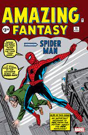
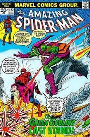
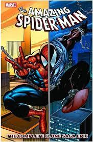

Spiderman, also known as Peter Parker, was created by writer Stan Lee and artist Steve Ditko and first appeared in Amazing Fantasy #15 in 1962, published by Marvel Comics.
Peter Parker was a high school student who gained spider-like abilities after being bitten by a radioactive spider during a science experiment. He decided to use his newfound powers to fight crime and protect the innocent, becoming the iconic superhero known as Spiderman.
Throughout the years, Spiderman has faced a variety of villains, including his arch-nemesis the Green Goblin, Doctor Octopus, Venom, and many others. He has also been a member of superhero teams such as the Avengers and the Fantastic Four.
Spiderman's character has undergone various iterations and adaptations in comic books, animated series, movies, and video games, making him one of the most recognizable and beloved superheroes worldwide.
While Peter Parker is the most well-known Spider-Man, there have been several other individuals who have taken on the mantle and responsibilities of the iconic superhero:
These are just a few examples of the many individuals who have taken on the mantle of Spider-Man in various comic book storylines and alternate universes.
The first issue of "The Amazing Spider-Man" series, featuring the debut of Spider-Man's iconic red and blue costume.
This storyline is one of the most famous in Spider-Man history, as it features the death of Peter Parker's girlfriend, Gwen Stacy.
This controversial storyline involves a clone of Peter Parker and had a significant impact on Spider-Man's continuity.
Check out Spider-man's appearances in movies, TV shows, and more.